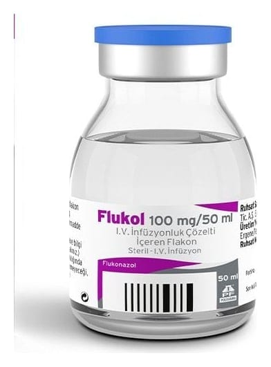

Flukol 100 mg/50 ml IV İnfüzyonluk Çözelti İçeren FLAKON,50 ml

Ne için kullanılır
KT · Bölüm 1FLUKOL berrak, renksiz çözelti, damar içi kullanım standartlarına uyum göstermelidir. Berrak, nötr cam şişelerde olmalıdır. FLUKOL, antifungal adı verilen bir grup ilaçtan biridir. Etkin madde flukonazoldür. FLUKOL, mantarların neden olduğu enfeksiyonları tedavi etmek için kullanılır ve ayrıca kandidal mantar enfeksiyonu kapmanızı engellemek için de kullanılabilir. Mantar enfeksiyonlarının en yaygın nedeni Candida adı verilen bir mayadır.
Yetişkinler • Bu ilaç size doktorunuz tarafından aşağıdaki mantar enfeksiyon türlerini tedavi etmek için verilebilir: • Kriptokokal menenjit (beyin zarında bir mantar enfeksiyonu) Bu ilacı kullanmaya başlamadan önce bu KULLANMA TALİMATINI dikkatlice okuyunuz, çünkü sizin için önemli bilgiler içermektedir. • Bu kullanma talimatını saklayınız. Daha sonra tekrar okumaya ihtiyaç duyabilirsiniz. • Eğer ilave sorularınız olursa, lütfen doktorunuza veya eczacınıza danışınız. • Bu ilaç kişisel olarak sizin için reçete edilmiştir, başkalarına vermeyiniz. • Bu ilacın kullanımı sırasında, doktora veya hastaneye gittiğinizde doktorunuza bu ilacı kullandığınızı söyleyiniz. • Bu talimatta yazılanlara aynen uyunuz. İlaç hakkında size önerilen dozun dışında yüksek veya düşük doz kullanmayınız.
• Koksidioidomikoz (vadi humması olarak bilinen, akciğerleriniz yoluyla vücudunuza giren mantarın neden olduğu bir hastalıktır) • Candida adı verilen mantar türünün neden olduğu ve kan dolaşımında, vücut organlarında (örn. kalp, akciğerler) veya idrar yollarında bulunan enfeksiyonlar • Mukozal pamukçuk (ağız, boğaz ve takma diş kaynaklı ağız yarasını etkileyen mantar enfeksiyonu)
Aşağıdakiler için de size FLUKOL verilebilir: • Kriptokokal menenjitin tekrarlanmasını önleme • Mukozal pamukçukların tekrarlanmasını önleme • Candida adlı mantarın sebep olduğu enfeksiyonlardan koruma (eğer bağışıklık sisteminiz zayıfsa ve düzgün çalışmıyorsa)
Çocuklar ve ergenler (0-17 yaş arası) • Bu ilaç size doktorunuz tarafından aşağıdaki mantar enfeksiyon türlerini tedavi etmek için verilebilir: Mukozal pamukçuk (ağız veya boğazda meydana gelen enfeksiyon) • Candida adı verilen bir mantar türünün neden olduğu ve kan dolaşımında, vücut organlarında (örn. kalp, akciğerler) veya idrar yollarında bulunan enfeksiyonlar • Kriptokokal menenjit (beyinde bir mantar enfeksiyonu)
Aşağıdakiler için de size FLUKOL verilebilir. • Candida adlı mantarın sebep olduğu enfeksiyonlardan koruma (eğer bağışıklık sisteminiz zayıfsa ve düzgün çalışmıyorsa) • Kriptokokal menenjitin tekrarlanmasını önleme